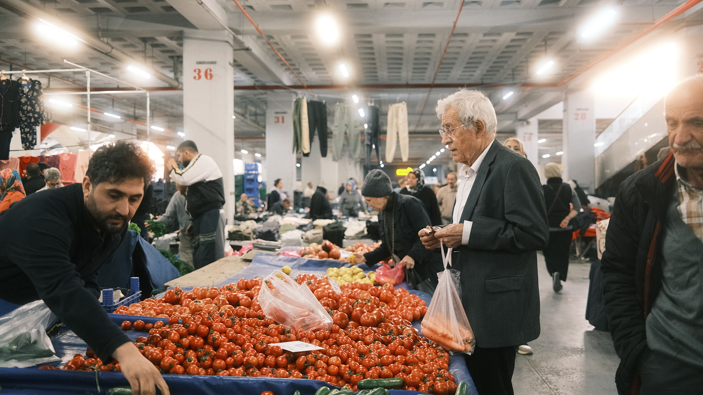
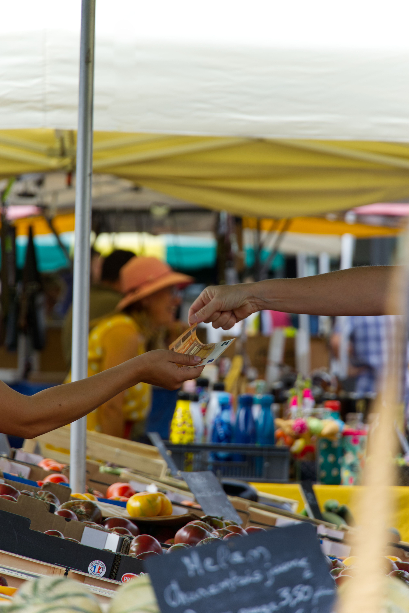
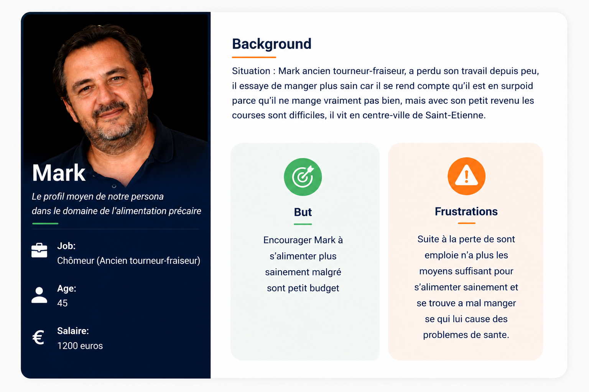
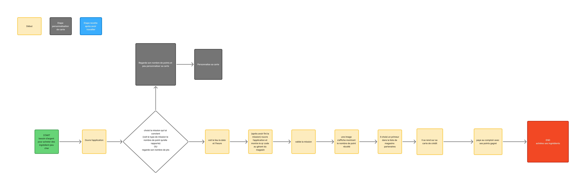

Antonin
"Le Pilier"
Ayoub
"Le Créatif"
Noah
"Le Sérieux"
Alexis
"Le Pointilleux"



En observant le quotidien de nos commerces de quartier et les difficultés d'accès aux produits de qualité, une évidence s'est imposée: la solution se trouve dans la proximité. ELAN est née de cette volonté de dynamiser l'entraide locale. En permettant de convertir des actions solidaires et des partages en produits frais chez nos partenaires, nous bâtissons un réseau où la solidarité alimentaire devient un réflexe quotidien, simple et valorisant pour tout le monde.

Pour les citoyens désireux d'agir, les personnes en quête d'un soutien alimentaire et les commerçants locaux engagés. ELAN rassemble toute une communauté solidaire.
Pour lutter concrètement contre la précarité alimentaire , valoriser l'entraide locale et favoriser les circuits courts.
Pour lutter concrètement contre la précarité alimentaire, valoriser l'entraide locale et favoriser les circuits courts.
Transformez vos crédits en produits alimentaires frais, directement dans les commerces partenaires, pour un soutien concret et local.
Transformez vos crédits en produits alimentaires frais, directement dans les commerces partenaires, pour un soutien concret et local.
Accomplissez de petites missions d'entraide au sein de la communauté pour accumuler des crédits et soutenir activement la vie des commerces autour de vous.
Nous géolocalisons les missions et les commerces partenaires pour vous offrir une expérience fluide et intuitive, vous permettant de trouver rapidement les opportunités d'entraide et les produits frais à proximité.
Échangez vos crédits cumulés directement en magasin contre des produits alimentaires frais et de qualité chez vos commerçants de proximité.
UserFlow

Après avoir développé nos premières maquettes, nous les avons soumises à une phase de tests auprès de nos futurs utilisateurs. Cette démarche nous a permis de confronter nos idées à la réalité du terrain et de récolter de précieux retours. Découvrez ci-dessous comment nous avons transformé ces remarques en améliorations concrètes pour rendre l'application plus simple, plus sûre et plus agréable au quotidien.
La phase de test utilisateur a mis en évidence le besoin d'une validation plus rigoureuse et d'un design plus chaleureux. La version "Après" intègre désormais un QR Code de validation , sécurisant l'échange entre le bénévole et le commerce partenaire. L'interface a également été épurée au niveau de la navigation basse et enrichie visuellement pour mieux refléter nos valeurs de circuits courts et d'alimentation de qualité.


Afin de rendre la recherche de missions plus intuitive, nous avons retravaillé l'ergonomie de l'écran principal. La carte intègre désormais des repères visuels thématisés (commerces, points d'intérêt) et un sélecteur "Liste / Carte" pour fluidifier la navigation. La carte de prévisualisation de la mission a également été épurée : son design est plus moderne, les informations clés (adresse, temps) sont mieux hiérarchisées et l'affichage des crédits est plus valorisé pour l'utilisateur.


À court terme, nous allons enrichir l'expérience utilisateur avec un système de
géolocalisation directement intégré à la carte des enseignes
partenaires.
L'objectif ? Permettre
à
chacun de trouver instantanément les commerces près de chez soi et
d'accéder aux missions
disponibles en quelques secondes.
Nous travaillons sur une personnalisation poussée pour adapter les missions et les offres selon le profil de l'utilisateur, ses habitudes et sa localisation. À terme, nous envisageons également d'introduire une carte physique ELAN pour faciliter encore plus les interactions et les paiements chez nos partenaires.
À plus long terme, notre ambition est d'élargir continuellement notre réseau de partenaires, de proposer de nouveaux types de missions solidaires et d’ouvrir la plateforme à d’autres villes pour faire d'Élan un véritable pilier de l’économie solidaire locale.
Et si vous avez des idées ou des suggestions, on est preneurs — c'est aussi ça, l'esprit solidaire